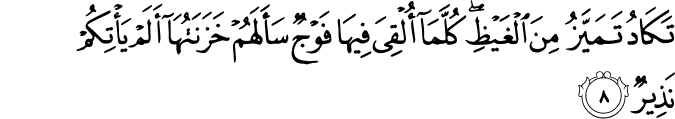
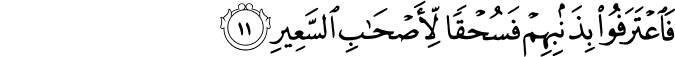

View in another Language
By Ali Muhsin Al-Barwani
- 67|1|AMETUKUKA ambaye mkononi mwake umo Ufalme wote; na Yeye ni Mwenye uweza juu ya kila kitu.
- 67|2|Ambaye ameumba mauti na uhai ili kukujaribuni ni nani miongoni mwenu mwenye vitendo vizuri zaidi. Na Yeye ni Mwenye nguvu na Mwenye msamaha.
- 67|3|Aliye umba mbingu saba kwa matabaka. Huoni tafauti yoyote katika uumbaji wa Mwingi wa Rehema. Hebu rudisha nadhari! Unaona kosa lolote?
- 67|4|Tena rudisha nadhari mara mbili, nadhari yako itakurejea mwenyewe hali ya kuwa imehizika nayo imechoka.
- 67|5|Na kwa hakika tumeipamba mbingu ya karibu kwa mataa, na tumeyafanya ili kuwapigia mashetani, na tumewaandalia adhabu ya Moto uwakao kwa nguvu.
- 67|6|Na kwa walio mkufuru Mola wao Mlezi ipo adhabu ya Jahannamu. Na ni marejeo maovu yalioje hayo!
- 67|7|Watakapo tupwa humo watausikia mngurumo wake na huku inafoka. 
- 67|8|Inakaribia kupasuka kwa hasira. Kila mara likitupwa kundi humo walinzi wake huwauliza: Kwani hakukujieni mwonyaji?
- 67|9|Watasema: Kwani! Ametujia mwonyaji, lakini tulimkadhibisha, na tukasema: Mwenyezi Mungu hakuteremsha chochote. Nyinyi hamumo ila katika upotovu mkubwa!
- 67|10|Na watasema: Lau kuwa tungeli sikia, au tungeli kuwa na akili, tusingeli kuwa katika watu wa Motoni! 
- 67|11|Wakakiri dhambi zao. Basi kuangamia ni kwa watu wa Motoni!
- 67|12|Hakika wanao mwogopa Mola wao Mlezi kwa ghaibu, watapata maghfira na ujira mkubwa.